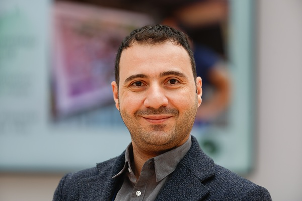
Omran NAJJAR
Emran ALCHIKH ALNAJAR
Senior Technical Product Owner – AI
Humanitarian OpenStreetMap Team (HOT)
Berlin, Germany · Douma, Syria

Emran ALCHIKH ALNAJAR
Senior Technical Product Owner – AI
Humanitarian OpenStreetMap Team (HOT)
Berlin, Germany · Douma, Syria
I believe AI must serve the communities it's built for. Every system I contribute to is evaluated against the needs of the people it impacts — especially the most vulnerable.
I use my experience to pursue justice through ethical, open-source technology — amplifying the connection between human[itarian] needs and open map data. I believe in transparency and collaboration over competition: the best outcomes happen when knowledge is shared freely and communities build together.
19+ years spanning AI product ownership, software engineering, and humanitarian tech across Syria, Turkey, the Philippines, and Germany.
Open-source GeoAI platform by HOT empowering humanitarian mappers to detect buildings, roads, and map features using community-trained machine learning models — integrated with OpenStreetMap. 320+ users, 75+ fine-tuned models, 3,600+ accepted predictions since 2024.
Founding volunteer of the OpenStreetMap Syria community — bringing together Syrians inside the country and in the diaspora to build and maintain open geographic data for humanitarian response, urban planning, and local development.
Community-led drone mapping initiative providing local councils with geo-referenced infrastructure maps to support post-conflict reconstruction planning in Douma (~13 km²). Pilot conducted in December 2025 at 3 cm resolution using fully open-source tools.
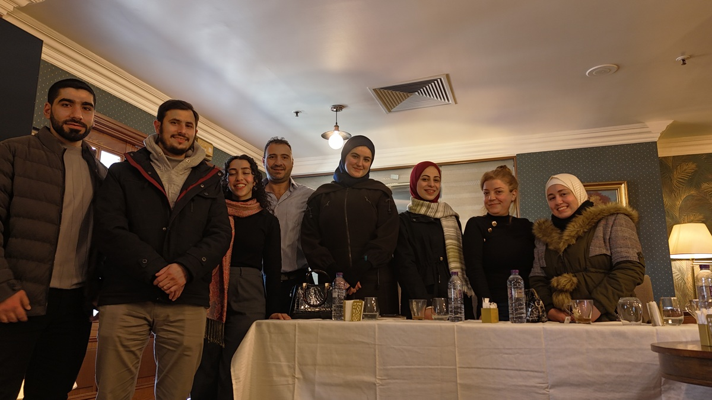
Organized and facilitated the 3rd OSM Syria community meeting — the first in-person gathering in Damascus (Hotel Al-Sham), bringing together 8 members to plan community activities and mapping initiatives.
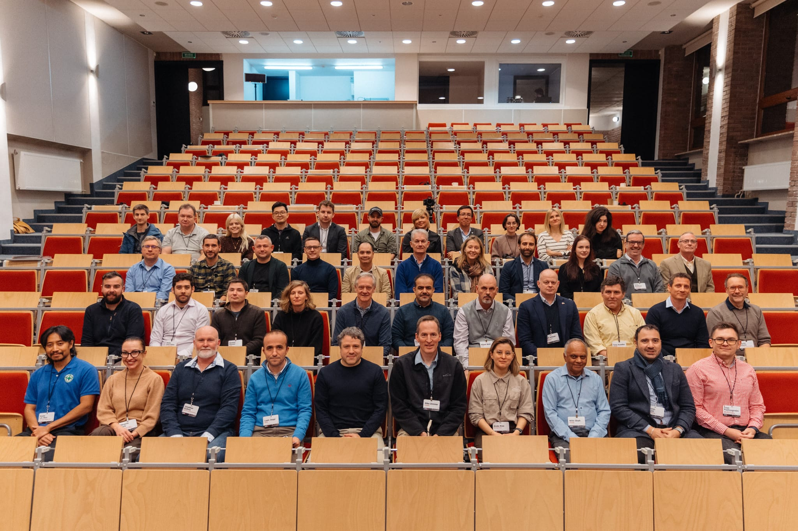
Attended HITS25, Minesight's summit on innovation and technology for humanitarian demining — exploring practical roadmaps for deploying AI and geospatial data in mine action operations.

Two-day hands-on training with 12 OSM Kenya mappers on fAIr's training workflow — testing AI models, refining datasets, and generating building data for Mozambique from satellite imagery.
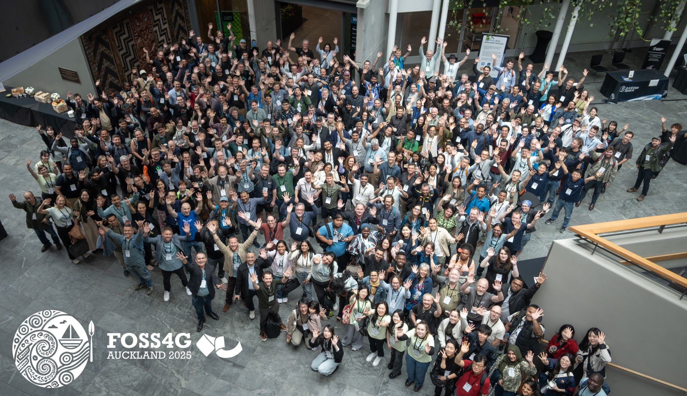
Presented "Free and Open Source AI Assisted Mapping: fAIr" at FOSS4G Global 2025 alongside Kshitij Raj Sharma and Leen D'hondt at Auckland University of Technology.
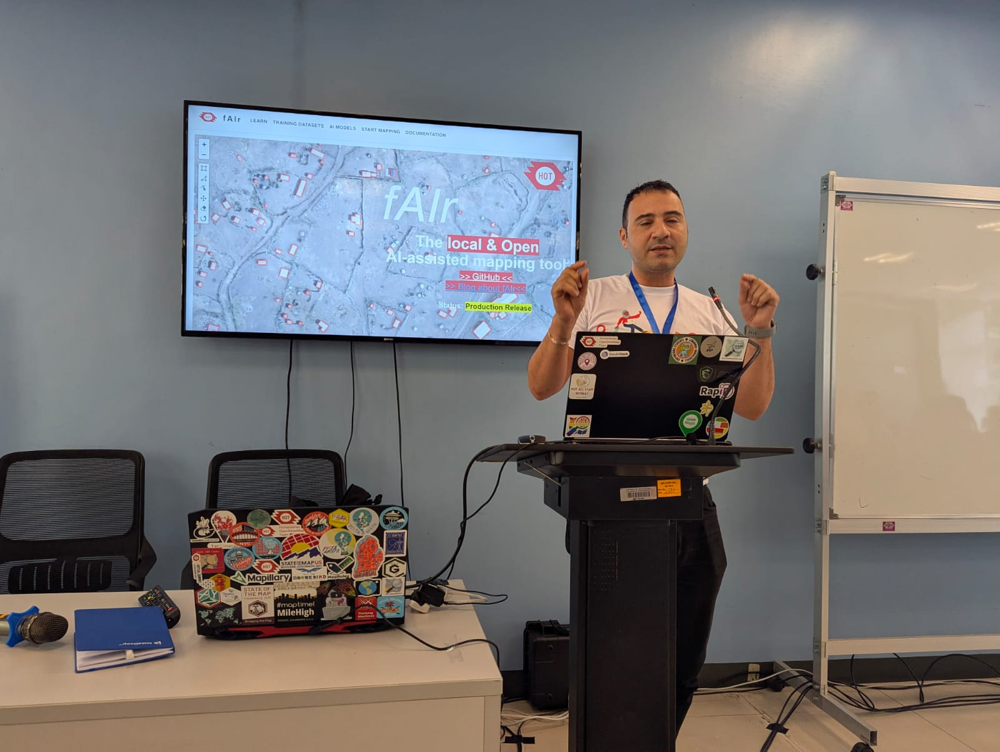
30-minute solo talk merging fAIr AI building predictions with MapSwipe crowdsourced validation to automate OSM data upload — a full pipeline from AI prediction to validated map data.
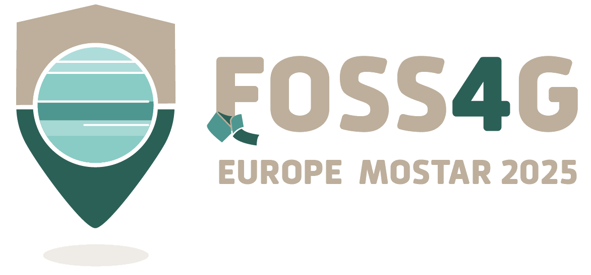
Presented the fAIr Community AI Assisted Mapping Roadmap at FOSS4G Europe 2025 alongside Petya Kangalova and Kshitij Raj Sharma.
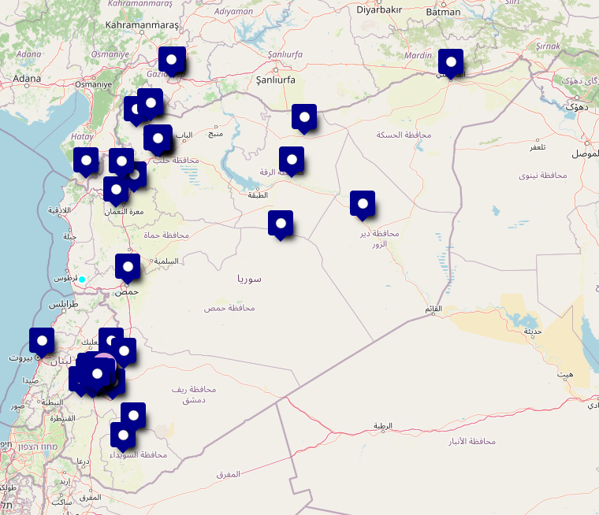
Facilitated the inaugural OSM Syria community meeting — introducing OpenStreetMap, demonstrating use cases in damage assessment and reconstruction, with a guest speaker from OSM Lebanon.

Co-presented HOT's fAIr at an action station alongside Petya Kangalova — one of 10 projects selected to pitch on stage at the AI Action Summit, Grand Palais, Paris.
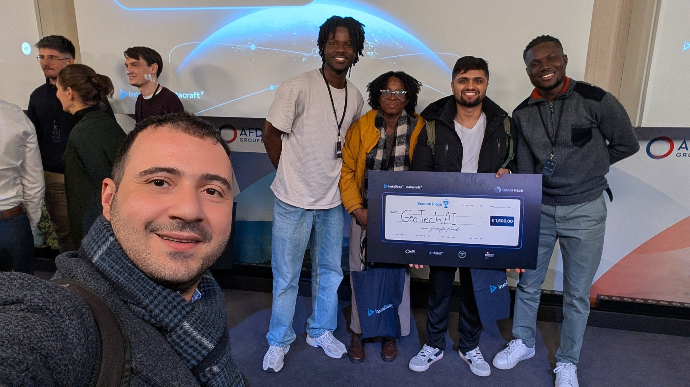
Served as judge at GeoAI Hack 2025, evaluating AI-powered early warning systems for Africa's desert locust crisis built using satellite data and ML frameworks.
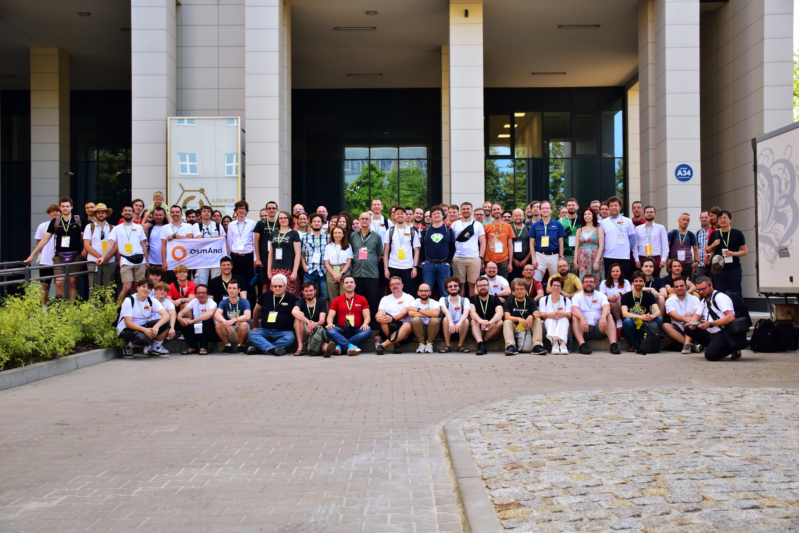
Co-presented the production release announcement for fAIr, HOT's AI-assisted mapping community service, showcasing model accuracy research and real-world deployment.
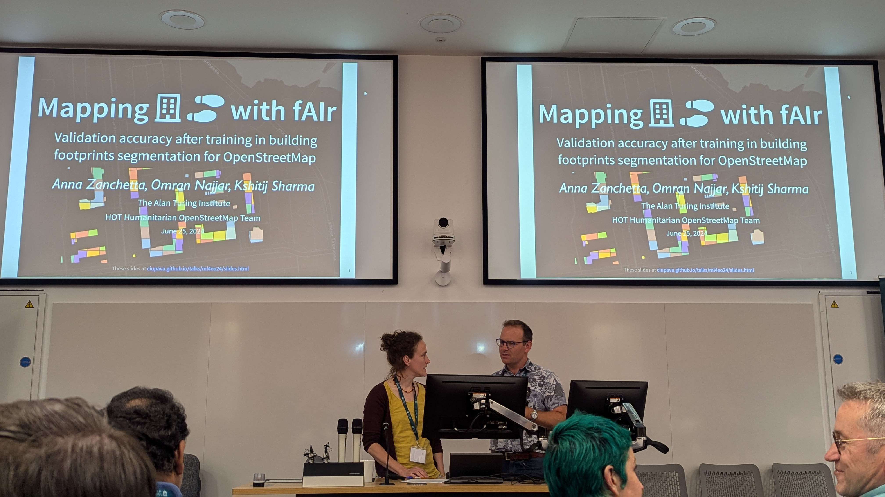
Academic poster co-author at ML4EO 2024 (University of Edinburgh) with Anna Zanchetta — presenting HOT's fAIr AI-assisted mapping approach to an Earth observation research audience.
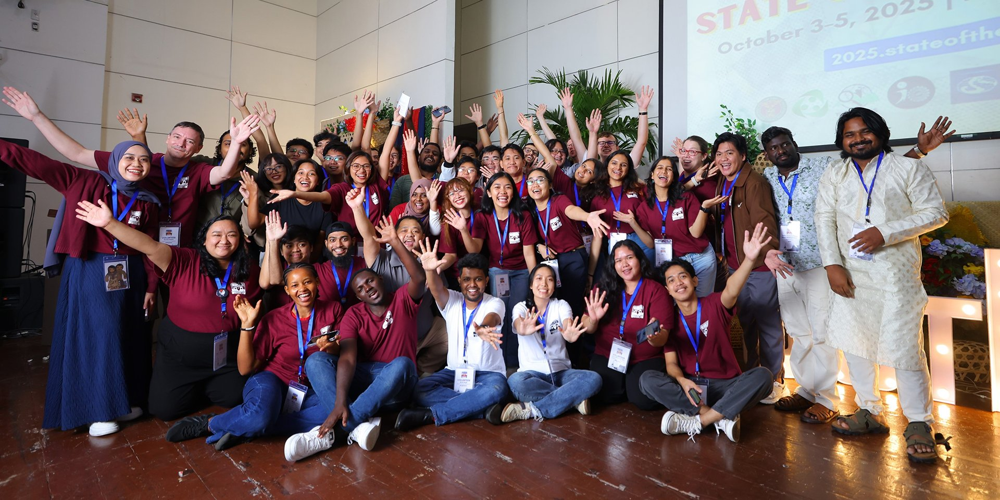
Presented "AI assisted Mapping in an open and ethical way — fAIr" to HOT's Asia-Pacific network of experienced OSM community leaders and trainers (200+ mappers).

Attended the ChangeNOW Summit at Grand Palais Éphémère alongside the HOT team, exploring where AI mapping intersects with ethical innovation and climate action.
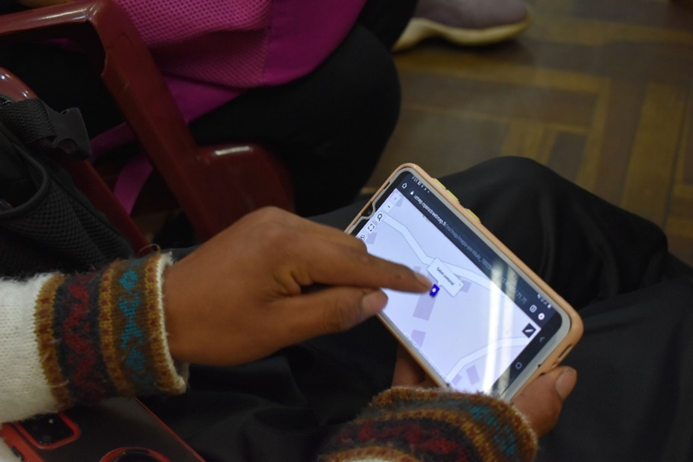
"AI: The biggest challenges are the biases and lack of transparency of algorithms" — discussed AI's potential for civil society and the need for ethical, transparent AI systems.
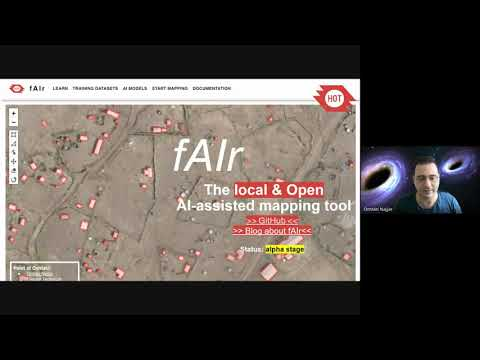
Behind-the-scenes interview on the fAIr AI-assisted mapping project at HOT, covering the Omdena innovation challenge and the vision for ethical AI in humanitarian mapping.
Video testimonial as HOT's Senior Product Owner on Omdena's AI solution developed during the fAIr innovation challenge for AI-assisted humanitarian mapping.
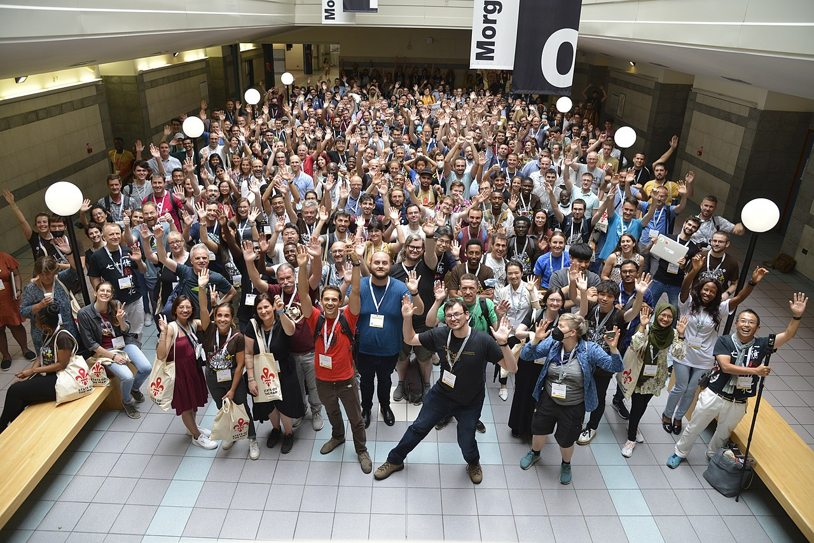
Co-authored academic paper on investigating UAV imagery capability for AI-assisted mapping of refugee camps in East Africa, presented at the SotM 2022 Academic Track.
Feel free to reach out — I'm always open to conversations about AI, humanitarian tech, and open-source mapping.